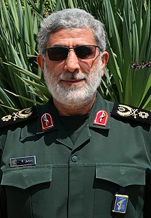

Esmail Qaani
Esmail Qaani | |
|---|---|
|  Qaani in 2020 | |
| Born | August 8, 1957 Mashhad, Iran |
| Allegiance | Iran |
| Service/ | Islamic Revolutionary Guard Corps |
| Years of service | 1980–present |
| Rank | Brigadier General |
| Commands held | Quds Force |
| Battles/wars | Iran-Iraq War (WIA)[1] |
{kind=link}
Esmail Qaani (also spelled as Ismail Qaani[2] Persian: اسماعیل قاآنی or اسمٰعیل قاآنی;[3] born 8 August 1957)[4] is an Iranian brigadier general in the Islamic Revolutionary Guard Corps and commander of its Quds Force — a division primarily responsible for extraterritorial military and clandestine operations. Leader of Iran Ali Khamenei appointed Qaani to succeed Qasem Soleimani as Commander of the Quds Force.[5][6][7]
Early life[edit]
He was born in the late 1950s in the city of Mashhad, a pilgrimage city and the second most populous city in Iran. He met Soleimani on the Iran-Iraq war fronts.[8] He joined the Revolutionary Guard in 1980.[9]
Military career[edit]
During the Iran–Iraq War of 1980–1988, Qaani led the 5th Nasr Brigade and 21st Imam Reza Armored Brigade.[10] In 1981, he received his military training in Imam Ali Officers' Academy in Tehran.[11]
ََََAfter the war, he has joined the Quds force and started his activities in Khorasan Province, which borders Afghanistan, Turkmenistan[9] and Pakistan.[12] While Soleimani stationed in the west, Qaani focused on Iranian priorities in the east, such as combating drug smuggling and supporting Afghanistan's Northern Alliance in its battles against the Taliban.[9]
He tackled the nuclear armed Pakistan without stirring a full-frontal encounter.[13]
Qaani was appointed deputy commander of the Quds Force in 1997 by chief commander Rahim Safavi, along with Qasem Soleimani as commander.[14] As Deputy, Qaani oversaw financial disbursements to paramilitary groups including Hezbollah and an arms shipment intended for The Gambia intercepted in Nigeria in October 2010.[15]
War against the Taliban in Afghanistan[edit]
After joining the Quds Force and starting activities in eastern Iran, he helped facilitate support for Afghanistan's Northern Alliance, a United Front against the Taliban, a Sunni militant movement with terrorist activities[16] that came to power in 1996.[17]
On the 1990s, he fought against Afghan drug cartels (Iran borders Afghanistan).[18] On 9 January 2018, Qaani visited a hospital that was being built with Iranian funds in Afghanistan as the envoy of Iran.[18]
Activities in Syria[edit]
On 25 May 2012, two villages in the Houla region of Syria were attacked, resulting in the deaths of 108 people, including 49 children. United Nations investigators concluded that victims had been killed in "two bouts of summary executions" by pro-Assad Shabiha.[19] U.S. State Department spokeswoman Victoria Nuland asserted on 29 May that Qaani alleged in an interview two days earlier that the Quds force helped train Shabiha responsible for the Houla attack.[20] On 27 May, Qaani had given an interview to Iranian Students News Agency (ISNA) stating, "Thanks to Iran's presence in Syria-- physically and nonphysically-- big massacres were prevented...if the Islamic republic had not been present in Syria, the massacre of its people would have been multiplied."[21] The interview was deleted from ISNA's site within hours, but copies remained on other news outlets.[22] According to Meir Javedanfar, an Iranian-Israeli expert on the Middle East, Qaani's statement was "the first time that an IRGC senior officer has admitted that the Quds force is operating in Syria."[23] Joint Chiefs-of-Staff Chairman Hassan Firouzabadi voiced on Press TV that "[w]e do not interfere in Syria's internal affairs but we support Syria as the resistance front against Israel because one of our principles is the issue of Palestine...We have encouraged the country's government to implement reforms and listen to its people's demands."[20]
Prior to his appointment as Quds Force commander, Qaani was most famous for recruiting the Liwa Fatemiyoun and Liwa Zainebiyoun Shia fighters operating in Syria.[24]
Escalation of Iran–United States tensions[edit]
Qaani has sharply criticized U.S. involvement in the region, at times expressing bellicose rhetoric towards President Donald Trump and American nationals.[citation needed]
At a ceremony commemorating martyrs on 5 July 2017, he contended that the U.S. had futilely spent $6 trillion on Iraq and Afghanistan in attempts to attack Iran. He ended saying, "America has suffered more losses from us than we have suffered losses from them."[25][26]
President Trump declined to recertify the Joint Comprehensive Plan of Action (JCPOA), less formally known as the Iran nuclear deal, on 13 October 2017.
On 22 January 2020, the U.S. targeted Qaani with death threats.[27] Abbas Mousavi, Spokesperson for the Ministry of Foreign Affairs of Iran said: "These words are an official announcement and a clear unveiling of America’s targeted and governmental terrorism".[27]
In the wake of the drone strike that killed his predecessor Soleimani, Qaani stated on Al-Jazeera, “We tell everyone, be patient and see the dead bodies of Americans all over the Middle East.”[28]
Command of Quds Force[edit]
Leader of Iran Ali Khamenei appointed Qaani as Commander of the Quds Force on 3 January 2020 after General Qasem Soleimani was killed by a targeted U.S. drone strike near Baghdad International Airport.[7][5] Reactions to his appointment were mixed. Khamenei described him as "one of the most prominent military commanders during the Sacred Defense".[29] Saeid Golkar, a professor of political science at the University of Tennessee in the US and a visiting fellow for Iran policy at the Chicago Council on Global Affairs believed that for Khamenei, it was important that the new commander had qualities such as "loyal" and "committed" to himself and the Revolutionary Guard. Also, he was familiar with the Quds Force and management of the forces and Iran's proxies. Qaani fit that bill.[8] Iranian expatriate and political expert, Dr. Karim Abdian Bani Saeed, expressed the view that the appointment of the subject was hasty and that Qaani's expertise falls short of that of the assassinated commander. However, he noted that despite his relatively unknown figure, Qaani is a veteran with decades of overseas military experience, and signaled that his appointment is unlikely either to reduce the Quds Force influence in the Iranian foreign policy, nor to change the Iranian influence in the region.[30]
Sanctions[edit]
On 27 March 2012, Qaani was added to the Specially Designated Nationals and Blocked Persons List by the U.S. Department of the Treasury's Office of Foreign Assets Control (OFAC), freezing his presumed assets and prohibiting transactions with U.S. entities.[31] The U.S. targeted Qaani with sanctions for overseeing the distribution of Quds Force funding to regional allies.[32]
Trump administration also announced new sanctions against the Revolutionary Guard as a supporter of terrorist groups.[33] Qaani responded, “We are not a war-mongering country. But any military action against Iran will be regretted... Trump’s threats against Iran will damage America... We have buried many... like Trump and know how to fight against America.”[34]
On 3 October 2022, Qaani was included in a Canadian sanctions list that included 9 Iranian entities, and 25 senior officials. The sanctions came in reaction to the Death of Mahsa Amini, and the persecution of protestors in the widescale protests that ensued.[35]
See also[edit]
- List of Iranian commanders in the Iran–Iraq War
- List of senior officers of the Islamic Revolutionary Guard Corps
References[edit]
- ^ Sardar Qaani;The commander in the shadow came to the field Tasnim News Agency
- ^ "Iran's supreme leader names new commander of Quds Force". aa.com.tr. 2020-01-03.
- ^ "فرمانده سپاه: ایران به حمایت از حماس ادامه میدهد" [IRGC commander: Iran continues to support Hamas]. Radio Azadi. Retrieved 2022-07-28.
- ^ "Esmail Ghaani: Who is Qasem Soleimani Successor?". See.News. 2020-01-03. Retrieved 2020-01-03.
- ^ a b Crowley, Michael; Hassan, Falih; Schmitt, Eric (2020-01-02). "U.S. Strike in Iraq Kills Qassim Suleimani, Commander of Iranian Forces". The New York Times. ISSN 0362-4331. Retrieved 2020-01-03.
- ^ "معاون سلیمانی: اسد را نیروی قدس به تهران آورد". Radio Farda (in Persian). Radio Farda. Retrieved 2019-06-02.
- ^ a b "Iran names deputy commander of Quds force to replace Soleimani after killing". CNBC. 2020-01-03. Archived from the original on 2020-03-14. Retrieved 2020-01-03.
- ^ a b Ibrahim, Arwa. "EsmaiI Qaani: New 'shadow commander' of Iran's Quds Force". Al Jazeera.
- ^ a b c "Esmail Qaani: The new man leading Iran's elite Quds Force He was also known for losing battles". BBC News. 7 January 2020.
- ^ "Iran's supreme leader names new commander of Quds Force". aa.com.tr. Retrieved 2020-01-04.
- ^ Alfoneh, Ali. "Who Is Esmail Qaani, the New Chief Commander of Iran's Qods Force?".
- ^ Oweis and Farmer, Khaled Yacoub and Ben (5 January 2020). "Who is Esmail Qaani, the new Iranian elite force commander?". The Nation.
- ^ Quraishi, Ahmed (14 January 2020). "Why Iran's Quds Force chose Esmail Qaani as Suleimani's successor". The National.
- ^ "Profile | The Canny General: Quds Force Commander Ghasem Soleimani". FRONTLINE - Tehran Bureau. Retrieved 2020-01-03.
- ^ "Esmail Ghani". Iran Watch - Tracking Iran's Unconventional Weapon Capabilities. Retrieved 2020-01-03.
- ^ "Foreign Terrorist Organizations". United States Department of State.
- ^ Cunningham, Erin. "Iran's new Quds Force commander brings continuity to the post held by his slain predecessor". washingtonpost.
- ^ a b Bezhan, Frud. "Iran's New Quds Force Leader Has A Long, Shadowy History With Afghanistan". Radio Free Europe/Radio Liberty.
- ^ "Most Houla victims killed in summary executions: U.N." Reuters. 2012-05-29. Retrieved 2020-01-04.
- ^ a b "Media Watch - Iran's Alleged Role in Syrian Massacre". PBS Frontline. 2012-06-21. Retrieved 2020-01-04.
- ^ "News Agency Removes Report On Iran's 'Physical' Involvement In Syria". Radio Free Europe/Radio Liberty. 2012-05-28. Retrieved 2020-01-04.
- ^ "Archive of ISNA Ghaani Interview". Baztab.net (in Persian). 2012-05-27. Archived from the original on 2013-02-05. Retrieved 2020-01-04.
- ^ "Syrian army being aided by Iranian forces". The Guardian. 2012-05-28. Retrieved 2020-01-04.
- ^ "How Iran can respond to the killing of Qassem Suleimani". The Economist. 9 January 2020.
- ^ "Quds Force Commander: We've Inflicted More Losses to America than It's Done to Us". Middle East Institute. 2017-07-13. Retrieved 2020-01-04.
- ^ "آمریکا با ۶هزار میلیارد دلار هزینه هیچ اقدامی علیه ایران نتوانست انجام دهد". Tasnim News Agency (in Persian). 2017-07-05. Retrieved 2020-01-04.
- ^ a b Eltahir, Nafisa (23 January 2020). "Successor to slain Iran general faces same fate if he kills Americans: U.S. envoy". reuters.
- ^ Borger, Julian; Holmes, Oliver; Chulov, Martin; Pilkington, Ed (2020-01-03). "Fears of new conflict in Middle East as Tehran vows to avenge killing". The Guardian. Archived from the original on 2020-01-04. Retrieved 2020-01-04.
- ^ "Ayatollah Khamenei Appoints Gen. Qa'ani as New Quds Force Chief". IFP News. 2020-01-03.
- ^ Yaghoub Fazeli and Emily Judd, Al Arabiya English. (4 January 2020). "Iran’s new Quds Force commander Esmail Ghaani ‘not another Solemani’: Expert". Al Arabiya English website Retrieved 3 January 2020.
- ^ "Specially Designated Global Terrorists Entries Added to OFAC's SDN List on March 27, 2012". OFAC SDN Sanctions Removal Lawyers. Retrieved 2020-01-03.
- ^ Cunningham, Erin. "Iran's new Quds Force commander brings continuity to the post held by his slain predecessor". The Washington Post.
- ^ "Trump threatens to rip up Iran nuclear deal unless US and allies fix 'serious flaws'". The Guardian. 2017-10-13. Retrieved 2020-01-04.
- ^ "Senior Quds force commander says Trump's threats against Iran will damage U.S.: report". Reuters. 2017-10-13. Retrieved 2020-01-04.
- ^ "Canada slaps new sanctions on Iran over death of Mahsa Amini". globalnews.ca. 3 October 2022.
| Commander-in-Chief |
|  |
|---|---|---|
| Chief of Joint Staff | ||
| Ground Force | ||
| Aerospace Force | ||
| Navy | ||
| Quds Force | ||
| Mobilization Force | ||
| Intelligence | ||
| Intelligence Protection |
| |
| Supreme Leader Representative | ||
| Ministers |
| |
| General Staff |
|
|---|---|
| Army |
|
| Revolutionary Guards |
|
| Police |
|
- 1957 births
- Living people
- People from Mashhad
- Islamic Revolutionary Guard Corps brigadier generals
- Islamic Revolutionary Guard Corps personnel of the Iran–Iraq War
- Islamic Revolutionary Guard Corps personnel of the Syrian civil war
- Quds Force personnel
- People of the War in Iraq (2013–2017)
- Iranian individuals subject to the U.S. Department of the Treasury sanctions